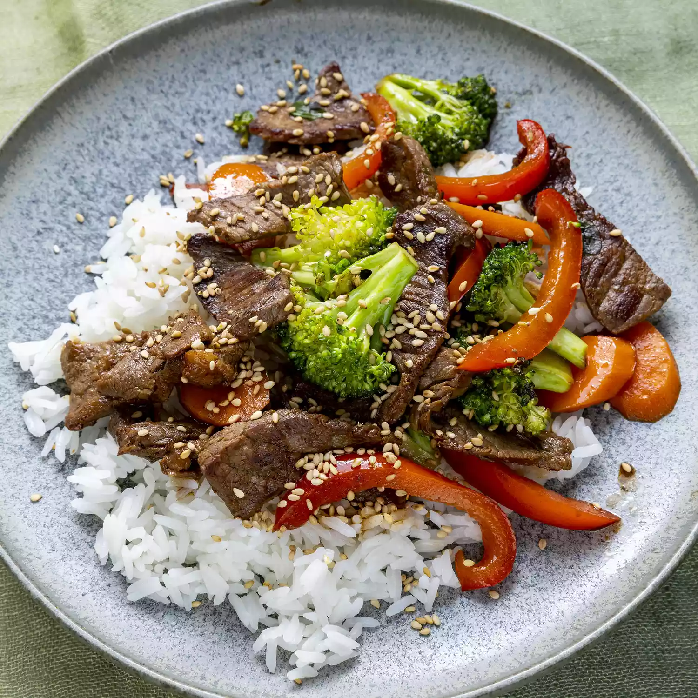

Beef Stir Fry

A quick, 30 minute meal for the week days.
Ingredients:
- Any veggies of your choosing
- 2 tbsp vegetable oil
- 1 pound beef sirloin, cut into 2-inch strips
- 1 green onion, chopped
- 1 tsp minced garlic
- 2 tbsp soy sauce
- 2 tbsp sesame seeds
Directions:
- Heat vegetable oil in a large wok or skillet over medium-high heat; cook and stir beef until browned, 3 to 4 minutes. Move beef to the side of the wok and add broccoli, bell pepper, carrots, green onion, and garlic to the center of the wok. Cook and stir vegetables for 2 minutes.
- Stir beef into vegetables and season with soy sauce and sesame seeds. Continue to cook and stir until vegetables are tender, about 2 more minutes.
- Enjoy!